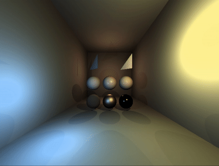
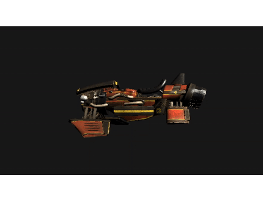

Software Raytracer
During the first part of the course "Graphics Programming 1", we learned how a raytarcer worked and how to make a software Raytracer.
During the year we had to build our raytracer up from scatch, applying each step of the process.

The raytracer will shoot a ray out of the camera per pixel it has to render. We can check if this ray collides with an object in the scene, if it does we will render the pixel in the correct color (determined by the material of the object).
Next we can approxiamate a simulation of the lightning and shadows by shooting (shadow)-rays from our light sources. By checking if an object is blocking the path of the light, we can know if a pixel is shadowed or illuminated.
Finally we implemented PBR (physical based rendering) shaders, this will give our object a realistic look, in the form of metals and plastics.
Through this process we can see some realistic looking spheres and triangles.
Software Rasterizer
During the next part of the course, we learned how a rasterizer was built up and how to make a software Rasterizer and write a basic software Phong Shader.
Once again we had to build it up from scratch, applying every step of the process, however do to the fact that we had learned how to make a Raytracer already, this went a lot of faster.

The rasterizer workes in 3 stages: The Projection stage, The Rasterization stage and The Pixel Shading stage.
In the Projection stage we convert the points of our triangles to Screen Space, first we multiply them with the WVP-Matrix (World View Projection), and then we do a perspective divide with the w-value of our position.
In the Rasterization stage we do a frustum culling and tranform our vertices into NDC-vertices (Normalized Device Coördinates).
And finally in the Pixel Shading stage, we check if a pixel is inside of a triangle and shade and/or color it accordingly.
We optimize this by using a bounding box around our triangle, so we don't have to check if every possible pixel falls in our triangle, but just the ones in the bounding box.